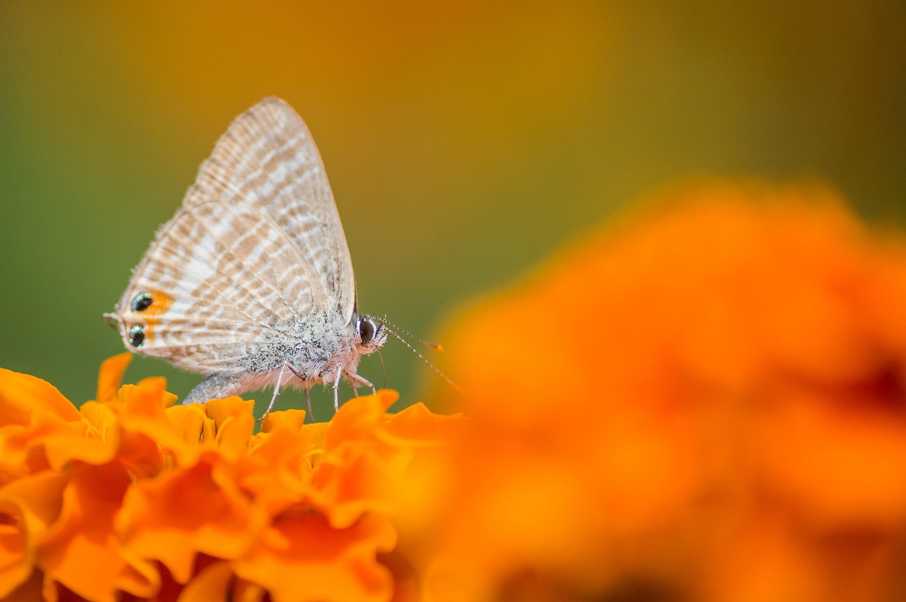

Exercício EBAC · Build automatizado
Galeria processada com Gulp
Os estilos, scripts e imagens desta página passam pelas tarefas configuradas no gulpfile.mjs.



Exercício EBAC · Build automatizado
Os estilos, scripts e imagens desta página passam pelas tarefas configuradas no gulpfile.mjs.
